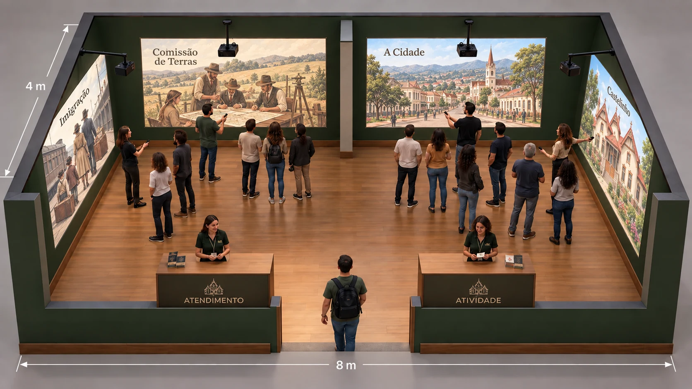
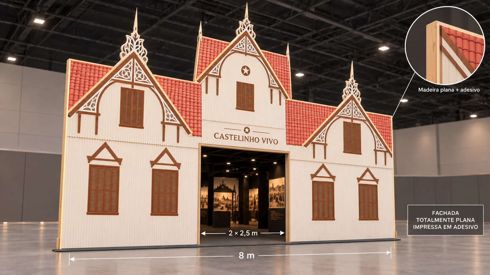
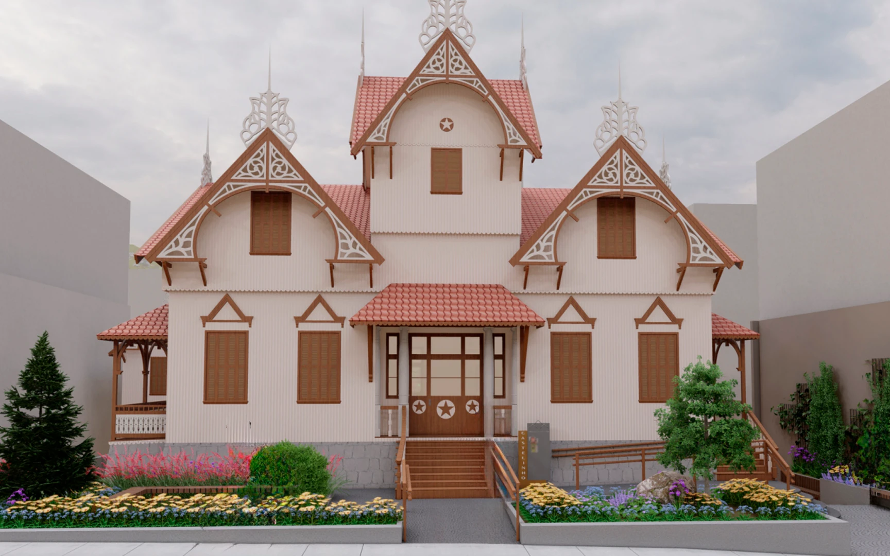
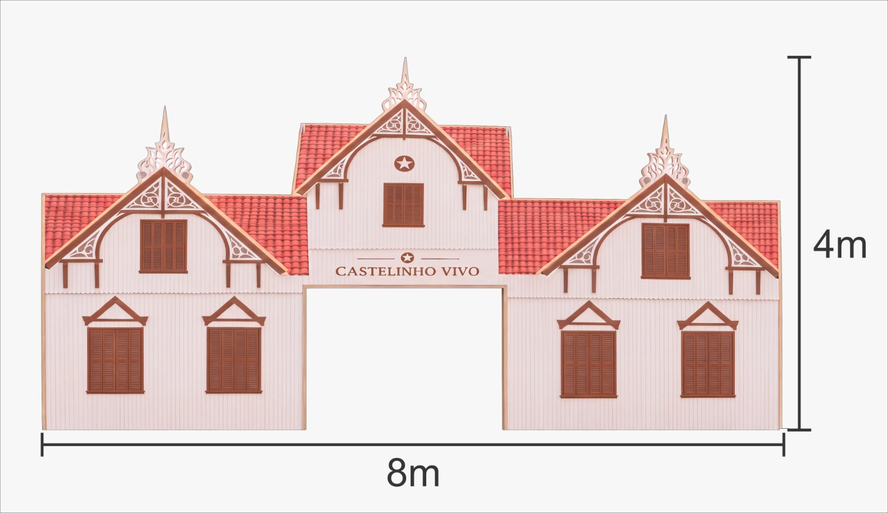

01
Conceito e espaço
Alinhar narrativa, fachada, sala de 8 × 4 m e condições do pavilhão.
Uma viagem pela história de Erechim.
Uma descoberta
compartilhada.
O patrimônio se transforma em um game de exploração. Quatro grupos entram, escolhem caminhos e descobrem histórias em projeções de grande formato.
O visitante reconhece a fachada, atravessa o portal e assume o controle de um explorador. A cada descoberta, entende um pouco mais sobre Erechim e sobre o patrimônio que a cidade preserva.
Fachada leve com a silhueta do Castelinho, cores e janelas características. Um portal no nível do piso convida a entrar. A fila fica organizada na área externa autorizada pela feira.
Um mediador organiza quatro grupos de cinco. Em cada grupo, uma pessoa navega com o controle Bluetooth e quatro acompanham, ajudam a encontrar pistas e decidem em conjunto.
Uma missão de aproximadamente quatro minutos combina exploração em 3D, um objeto histórico, um desafio simples e uma descoberta. Cada grupo tem seu próprio navegador e sua própria imagem.
Na saída, o visitante recebe o selo Frinape 2026 e acessa o Passaporte do Castelinho por QR Code. Conteúdos complementares prolongam o contato com a memória local.
Moradores, estudantes, famílias, turistas e pessoas que nunca usaram um videogame. Comandos simples, orientação humana e alternativa de percurso assistido.
Ambientes 3D, histórias pesquisadas, materiais educativos e uma versão do jogo que poderá circular em escolas e espaços culturais, conforme acordos de uso e manutenção.
A imersão vem da arquitetura cenográfica, da escala das imagens, do som e da participação. As telas podem mostrar lugares diferentes do Castelinho ao mesmo tempo.
Quatro projetores no teto. Quatro computadores. Quatro controles Bluetooth. Um capítulo por tela, da esquerda para a direita: Imigração, Comissão de Terras, A Cidade e Castelinho.

Uma pessoa assume a navegação. As outras quatro acompanham, interpretam as pistas e ajudam nas escolhas.
Cada computador exibe sua própria câmera e seu próprio percurso. Uma ação em uma estação não muda as outras.
Quatro navegadores e dezesseis acompanhantes. O controle pode ser revezado entre rodadas, com orientação da equipe.
As projeções ocupam grandes áreas das paredes. Fotografias, objetos, mapas e personagens convidam o grupo a observar e conversar. Não é necessário usar óculos de realidade virtual.
Duas projeções no fundo e uma em cada lateral. Quatro áreas de imagem com 3 m de largura × 2 m de altura, preservando a frente para a entrada.
As duas projeções de 3 m ficam lado a lado, separadas por uma faixa central de 1 m e com 50 cm livres em cada extremidade. O biombo nasce no meio dessa faixa e avança 1 m para dentro da sala, sem dividir o estande inteiro.
O intervalo de 1 m é entre as áreas de imagem; a distância entre os aparelhos no teto será definida pelas lentes.
Recepção, formação dos grupos e apresentação do controle. Balcão à esquerda da entrada, voltado para quem chega; atendente atrás, pelo lado interno da sala. Preservar a passagem e a projeção lateral.
Conclusão da experiência, carimbo do passaporte e acesso aos conteúdos por QR Code. Balcão à direita da entrada, voltado para quem chega; atendente atrás, pelo lado interno da sala.
Uma única face plana de madeira, revestida com adesivo impresso, traduz o Castelinho para o pavilhão da Frinape. Telhados, janelas e ornamentos fazem parte da impressão.

Torre central, frontões laterais, lambrequins, telhados e janelas seguem a referência do Castelinho.
Chapas retas unidas no mesmo plano, com sustentação posterior e adesivo aplicado na face frontal. O desenho simula telhados, janelas, molduras e ornamentos. Recorte apenas do contorno geral e do vão de entrada.
Portal central aberto, no nível do piso. Controle de entrada e saída pela equipe, com fila na área autorizada.

Cada tela apresenta uma fase independente, com vídeos imersivos, exploração em primeira pessoa e escolhas do grupo. Os roteiros combinam o modelo do Castelinho, cenas produzidas no Blender e vídeos gerados por IA. A montagem interativa será feita em 3DVista ou Unity, após o teste do modelo e do controle.
Olhar e escolher com o direcional. Caminhada livre ou percurso guiado conforme o teste do modelo e do controle Bluetooth.
Um botão para abrir, examinar, ouvir ou responder. Pistas visuais e orientação do mediador.
Cada missão revela um fato ou saber e termina com uma conquista cultural.
Abra uma fase para ver o resumo e o percurso visual. As cenas, a locução e as orientações de produção ficam nos detalhes.
Cada fase concede um carimbo. “Guardião do Castelinho” reconhece a conclusão das quatro fases, verificada pela equipe no passaporte. As estações funcionam de forma independente.
Quatro capítulos, um por tela, da esquerda para a direita: Imigração, Comissão de Terras, A Cidade e Castelinho. Os botões reúnem roteiros para avaliação. Os vídeos e a experiência jogável serão produzidos após aprovação e análise do modelo 3D.
Rodadas curtas ajudam a organizar a fila. A estimativa abaixo separa quem navega com o controle de todos os participantes da experiência.
67 rodadas completas por dia, com 20 pessoas por rodada.
Cálculo: 60 ÷ (missão + troca) × fator de operação × horas. Arredondamento diário para rodadas completas; cada rodada tem 4 navegadores + 16 acompanhantes. O fator de operação considera pausas, atendimento assistido e intervalos.
Estimativa de planejamento, sujeita a ensaio com público. Participações não são visitantes únicos: retornos e revezamentos podem contar a mesma pessoa novamente. O número real também depende da demanda e da ocupação dos grupos.
Orientar os quatro grupos, apoiar as escolhas, auxiliar quem precisa e conduzir o reinício. Acompanhantes participam das descobertas sem disputar o controle.
Formar grupos de cinco, apresentar os comandos e organizar a entrada e saída. Prever suporte técnico, pausas e revezamento da equipe.
Cada joystick comanda somente o computador de sua estação. Esse computador envia sua imagem ao projetor correspondente.
Controle VR Bluetooth com giroscópio, conforme a referência fornecida, com direcional analógico e botões. O movimento do personagem e o botão de interação serão adaptados ao dispositivo.
Câmera assistida: facilitar a orientação com ajuste automático e comandos simples, para quem não tem familiaridade com jogos.
O modelo do anexo é uma referência a testar. Compatibilidade Bluetooth com o computador, leitura dos botões, alcance e resposta no game precisam ser confirmados antes da aquisição.
Controle VR Bluetooth com giroscópio
O jogo deve executar localmente, com início simples, reinício entre grupos e recuperação rápida. Internet poderá apoiar manutenção e passaporte, sem ser necessária para completar a missão na sala.
Preencha o valor unitário e a data de cada cotação. A quantidade indicada na descrição é aplicada automaticamente ao valor total.
| Produto/serviço | Descrição | Valor unit. | Valor total | Data | ✓ |
|---|---|---|---|---|---|
| Projetor ViewSonic LSD500HD | Quatro projetores de teto para as áreas de imagem de 3 × 2 m. Valor informado por unidade. | ||||
| Computadores | Quatro estações independentes para executar as missões. | ||||
| Controles Bluetooth com giroscópio | Quatro controles em uso e uma unidade de reserva. | ||||
| Som ambiente 3D | Kit de som ambiente com quatro caixas JBL e amplificador Frahm Slim 3200, na cor preta. | ||||
| Suportes de teto para projetores | Fixação e regulagem dos quatro projetores. | ||||
| Cabeamento e infraestrutura elétrica | Cabos de energia, vídeo, extensões, proteção e organização. | ||||
| Conectividade e suporte de rede | Internet de apoio para manutenção e recursos complementares. | ||||
| Estande — face com moldura do Castelinho | Montagem da face em PVC de 2 mm, conforme o layout de referência do Castelinho. Ver imagem ↓ | ||||
| Adesivo impresso para a fachada | Impressão e aplicação dos detalhes arquitetônicos. | ||||
| Balcões de atendimento e atividade | Dois balcões frontais para recepção e conclusão da experiência. | ||||
| Divisória interna | Divisória central com avanço aproximado de 1 m. | ||||
| Montagem cenográfica | Instalação da fachada, dos balcões, da divisória e dos equipamentos. | ||||
| Desmontagem cenográfica | Retirada da estrutura e organização dos materiais após o evento. | ||||
| Transporte e frete | Transporte de equipamentos, cenografia e materiais. | ||||
| Pesquisa histórica e curadoria | Pesquisa de acervo, revisão histórica e direitos de uso. | ||||
| Roteiro das quatro missões | Roteiros de Imigração, Comissão de Terras, A Cidade e Castelinho. | ||||
| Modelagem e adequação 3D | Tratamento do modelo do SketchUp e produção de ambientes no Blender. | ||||
| Desenvolvimento do game | Implementação interativa em 3DVista ou Unity. | ||||
| Conteúdo audiovisual e vídeos | Produção, edição e integração dos conteúdos audiovisuais. | ||||
| Passaporte do Castelinho e QR Code | Projeto, impressão, carimbos e acesso aos conteúdos complementares. | ||||
| Materiais educativos | Materiais de apoio para escolas e espaços culturais. | ||||
| Recursos de acessibilidade | Legendas, audiodescrição, contraste e comandos adaptáveis. | ||||
| Testes técnicos e ensaio com público | Testes de projeção, controles, áudio, fluxo e vinte participantes. | ||||
| Formação da equipe e mediação | Treinamento para recepção, orientação e apoio aos participantes. | ||||
| Operação durante a Frinape | Onze dias de atendimento, suporte técnico e revezamento da equipe. | ||||
| Licenças de software e direitos de uso | Licenças, cessões e autorizações necessárias para a realização. | ||||
| Espaço e taxas da feira | Custos do espaço, autorizações e taxas relacionadas à Frinape. | ||||
| Tributos e seguros | Tributos incidentes e coberturas previstas para o projeto. | ||||
| Reserva operacional e manutenção | Margem para contingências, reposição e manutenção do legado. | ||||
| Estande — chapa de Eucatex | Chapa de Eucatex fornecida pela Prefeitura, sem custo para o orçamento do projeto. | ||||
| Camisas polo personalizadas | Vinte camisas polo personalizadas para a equipe do projeto. Valor informado por unidade. | ||||
| Promotora para acompanhamento da feira | Acompanhamento durante dez dias de feira. Valor informado por dia. |

A planilha é salva neste navegador e sincronizada online sem necessidade de login.
Produzir uma experiência de educação patrimonial que aproxime a população da história de Erechim e do Castelinho durante sua restauração.
Proposta de participação gratuita, legendas, contraste, áudio descritivo e comandos adaptáveis. Atendimento sentado e percurso assistido a validar com usuários. A circulação da sala será revista por responsável técnico.
Pesquisa no acervo autorizado, revisão histórica e identificação de reconstituições. Personagens e depoimentos têm direitos de uso definidos. Cadastro não será condição para jogar.
Histórico: reconstituições documentadas. Presente: registros datados da restauração. Futuro: ambientes previstos no projeto de ocupação. O SketchUp orienta a arquitetura; ele não comprova como cada sala era no passado. A cronologia de 1915/1916 e as narrativas sobre a construção serão validadas antes da produção.
Preencha a data, o responsável, a referência e as observações de cada etapa. As pendências permanecem na ordem do projeto e definem automaticamente a próxima reunião.
Alinhar narrativa, fachada, sala de 8 × 4 m e condições do pavilhão.
Receber o modelo 3D e os registros históricos dos quatro capítulos; conferir os direitos de uso.
Validar as quatro áreas de 3 × 2 m, o pareamento Bluetooth, as sombras e o áudio.
Aprovar o visual, a história, a navegação e um percurso jogável.
Concluir Imigração, Comissão de Terras, A Cidade e Castelinho, nessa ordem nas telas, com passaporte e acessibilidade.
Testar vinte participantes, a duração das rodadas e a operação da equipe.
Conferir a estrutura, o conteúdo e o funcionamento após a liberação da feira.
As datas de alinhamento devem considerar a aprovação do projeto, a disponibilidade do acervo e a liberação do espaço.
Marcar uma etapa como alinhada não registra assinatura nem aprovação institucional.